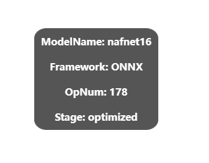
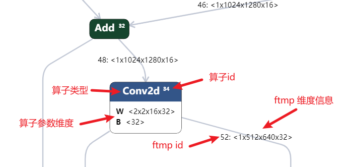
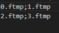
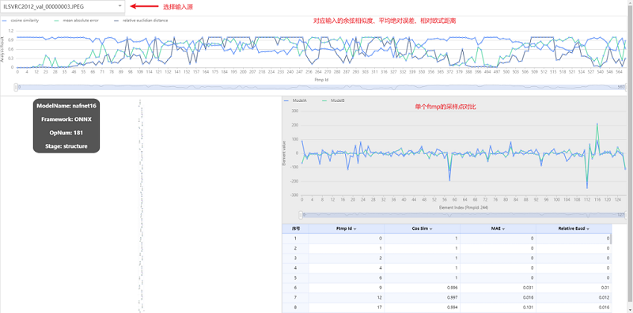
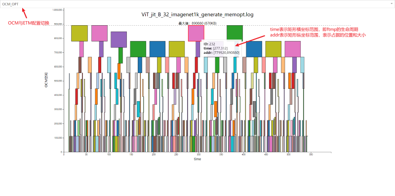

Icraft Show#
命令行参数列表#
每次使用命令行参数时请不要混用不同功能
参数名 |
参数取值 |
功能 |
|---|---|---|
–json |
json或imodel文件路径 |
可视化 |
–raw |
raw文件路径 |
可视化 |
–analyse |
量化分析结果文件夹 |
量化分析工具 |
–ftmp_dir1 |
要对比的ftmp结果文件夹A |
对比ftmp (以fp32类型读取，故需要SFB形式dump) |
–ftmp_dir2 |
要对比的ftmp结果文件夹B |
对比ftmp (以fp32类型读取，故需要SFB形式dump) |
–log_path |
默认值.icraft/log |
设置生成文件的路径 |
一、网络参数可视化#
1.1 输入#
点击可视化按键后会弹出输入文件窗口，当前支持三种输入模式
输入模型的json文件
输入模型的json和raw文件
输入模型的imodel文件（imodel文件等效于json和raw）
1.2 显示#
左上的固定节点表示了一些全局信息
网络名称
源网络所处框架
算子节点数目
当前网络所处阶段

每个节点表示一个算子，包括算子类型、算子id以及算子参数的维度信息（如果有权重的话）
每个边字表示算子间输入输出的ftmp，冒号前是ftmp的id, 冒号后面是ftmp的维度信息

左键点击节点会在右侧侧边栏弹出算子的详细信息，如果在输入时输入了raw文件则可以在侧边栏 查看weights 按钮切换显示算子的参数信息,参数信息提供了 十进制 和 十六进制 切换显示，并且可以保存到文件按钮放到一个csv文件或二进制文件进行查看
备注
值得注意的是BY阶段网络HardOp算子instr参数表示硬件指令，其十进制无特别含义
1.3 搜索#
通过快捷键 Ctrl+F 打开功能，通过 Esc 退出搜索界面
输入关键字后按下回车即可将对应节点或者边导航到屏幕中心,搜索关键字包括以下三种
算子类型（支持不完全匹配）
算子id（完全匹配）
ftmp id（完全匹配）
二、量化分析工具#
为了更加方便的分析编译器对模型的量化效果，我们使用XRun工具对optmizer阶段和quantize阶段的模型进行相同输入前向，通过对比各算子输出ftmp的余弦相似度、相对欧氏距离和平均绝对误差来评判量化效果
v3.6.0 之后适配了其他阶段的网络模型进行对比，可以任意输入两个阶段的模型，便于分析哪个阶段引入了误差
2.1 开始新分析#
两阶段的模型需要输入完整的模型(json&raw文件)
当模型是单输入时，输入图片选择n张图片输入即代表进行n次前向 当模型是多输入，输入数量为num时，当输入n*num张图片,需要额外输入一个用于匹配各组输入的txt文本文件 每行代表一组输入，以分号进行分隔

Cuda模式注意设备的cuda可用，默认是CPU前向
Fake_qf_n 选项表示对量化前向使用fake_qf功能，取消截位限制，并乘以normratio,主要用于对比分析乘累加溢出的问题
DecodeDll 表示网络输入预处理所使用的动态链接库
输入完成后点击开始分析即可，视模型大小需要稍等一段时间
分析完成即会在 .icraft\log 目录下生成对应模型名称的文件夹,包含了model_structure.json 、analysis_results.json文件和对应每组输入的ftmp文件夹
请勿修改生成的文件名称
2.2 加载已有结果#
将分析结果得到的model_structure.json 、analysis_results.json两个文件上传即可看到两个阶段的ftmp对比

左上角下拉框可以选择每组输入对应结果或者所有输入结果的平均值
上方折线图横坐标以算子在网络中的执行序排列, 三条线分别表示余弦相似度、相对欧氏距离和平均绝对误差，可以通过点击对应表头来隐藏对应折线段，计算公式如下：
余弦相似度：

相对欧式距离：

平均绝对误差：

输入源选择具体的一组输入（不是平均值选项）时，中间的折线图会显示每个ftmp的具体值，通过点击上方折线图的点切换ftmp，最大显示1000个采样点 初次切换为均匀采样，步长和起始点选项可以通过上下方向键或者输入对应数字调节，按回车键刷新 基于显示效果考虑限制了最大显示采样点数量，比如起始点为0，步长为1表示取前1000个点，可根据需要调节采样范围
三、内存优化分析#
内存优化分析旨在对CodeGen组件内存分配策略进行可视化分析
备注
CodeGen组件根据需求对网络模型中的参数、输入输出进行地址分配。其中模型参数按顺序依次存放在外部存储（External Memory，以下简称ETM）中， 输入输出特征图紧随其后依次存放。由于ETM存储AI核的通信带宽受限，为了提高效率，CodeGen组件将部分满足条件的输入输出特征图存放在片上存储 （On-Chip Memory，以下简称OCM）中，从而减小读写ETM的带宽压力，提高模型在硬件上的运行效率。
3.1 输入#
内存分析要求输入为generate程序输出的_generate_memopt.log文件，需要generate开启对应配置（默认为打开）产生ETM和OCM两种优化信息
3.2 功能说明#
图表横坐标代表时间周期，纵坐标表示对应存储的范围（OCM最大为2MB）
每个矩形元素即代表一个ftmp在对应存储上的生命周期、占据的位置和大小
通过最上方下拉框可以选择展示OCM或ETM，鼠标悬浮对应矩形可以查看对应的横纵坐标，通过鼠标滚轮和点击拖拽功能可以实现x轴的缩放与平移，方便查看相对密集的信息
